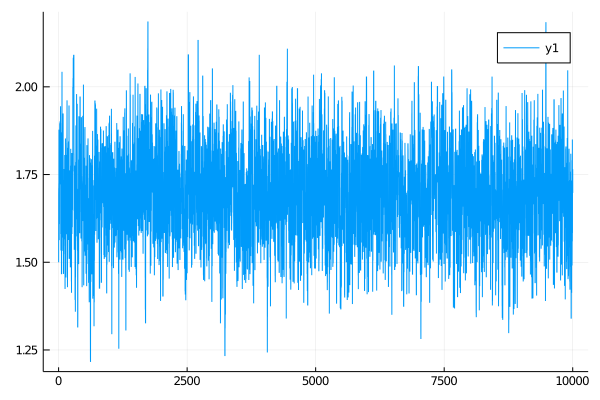

Inference with blocking with BiBlocks
#↓ ↓ ↓ ↓ ↓ ↓ ↓ ↓ ↓ ↓ ↓ ↓ ↓ ↓ ↓ ↓ ↓ ↓ ↓ ↓ ↓ ↓ ↓ ↓ ↓ ↓ ↓ ↓ ↓ ↓ ↓ ↓ ↓ ↓ ↓ ↓ ↓ ↓ ↓ ↓
function simple_name_structure_not_last(pname::Symbol, num_obs)
pnames = (
PP = _build_struct(num_obs-1, (1=>pname)),
P_last = _build_struct(1, (1=>pname)),
P_excl = _build_struct(1, (1=>pname)),
Pb_excl = _build_struct(num_obs-1, (1=>pname)),
)
end
function simple_name_structure_blocking(pname::Symbol, block_layout)
map(block_layout) do block_set
map(enumerate(block_set)) do (i, block)
(
i == length(block_set) ?
simple_name_structure(pname, length(block)) :
simple_name_structure_not_last(pname, length(block))
)
end
end
end
#↑ ↑ ↑ ↑ ↑ ↑ ↑ ↑ ↑ ↑ ↑ ↑ ↑ ↑ ↑ ↑ ↑ ↑ ↑ ↑ ↑ ↑ ↑ ↑ ↑ ↑ ↑ ↑ ↑ ↑ ↑ ↑ ↑ ↑ ↑ ↑ ↑ ↑ ↑ ↑
function accept_reject_proposal_param!(B::AbstractArray{<:BiBlock}, mcmciter, θ, θ°)
accepted = rand(Exponential(1.0)) > mapreduce(bb->-(bb.b°.ll - bb.b.ll),+,B)
accepted && swap_XX!.(B)
accepted && swap_PP!.(B)
(bb->save_ll!(bb.b, mcmciter)).(B)
(bb->save_ll!(bb.b°, mcmciter)).(B)
accepted && swap_ll!.(B)
accepted, copy(accepted ? θ° : θ)
end
function simple_inference_with_blocking(
AuxLaw, recording, dt, AuxLawBlocking, block_layout, _θ;
ϵ=0.3, ρ=0.5, num_steps=10^4
)
# making sure that things are in order...
_pname = collect(keys(_θ))
# for simplicity restrict to inference for a single param
@assert length(_pname) == 1
pname = first(_pname)
θ = collect(values(_θ))
# setting the initial guess θ inside the recording
OBS.set_parameters!(recording, _θ)
# setting up containers
tts = OBS.setup_time_grids(recording, dt, standard_guid_prop_time_transf)
sp = SamplingPair(AuxLaw, recording, tts)
blocks = [
[
BiBlock(sp, br, ρ, i==length(block_ranges), num_steps)
for (i,br) in enumerate(block_ranges)
] for block_ranges in block_layout
]
name_struct = simple_name_structure_blocking(pname, block_layout)
paths = []
θθ = [θ]
a_h = Bool[]
# MCMC
for i in 1:num_steps
for B in blocks
GP.set_obs!.(B)
(bb->recompute_guiding_term!(bb.b)).(B)
find_W_for_X!.(B)
loglikhd!.(B)
draw_proposal_path!.(B)
accept_reject_proposal_path!.(B, i)
# progress message
if i % 100 == 0
println(
"$i. ll=$(ll_of_accepted.(B, i)), acceptance rate: ",
"$( map(bb->accpt_rate(bb, (i-99):i), B) )"
)
end
end
θ° = customkernel(θ, ϵ)
B = blocks[end]
for (idx, bb) in enumerate(B)
set_proposal_law!(bb, θ°, name_struct[end][idx], true)
end
(bb->recompute_guiding_term!(bb.b°)).(B)
accpt, θ = accept_reject_proposal_param!(B, i, θ, θ°)
push!(θθ, θ)
push!(a_h, accpt)
if i % 100 == 0
println(
"$i. updt a-r: ",
"$(sum(a_h[(i-99):i])/100)."
)
end
# save intermediate path for plotting
i % 400 == 0 && append!(paths, [deepcopy(sp.u.XX)])
end
paths, θθ
endusing OrderedCollections
θ = OrderedDict(:γ=>1.5)
DD.var_parameter_names(::FitzHughNagumo) = (:γ,)
DD.var_parameter_names(::FitzHughNagumoAux) = (:γ,)
@load_diffusion FitzHughNagumoAux
paths, θθ = simple_inference_with_blocking(
FitzHughNagumoAux, recording, 0.001, FitzHughNagumoAux,
[[1:25,26:75,76:100],[1:50, 51:100]], θ; ϵ=0.3, ρ=0.96, num_steps=10^4
)
plot(getindex.(θθ, 1))